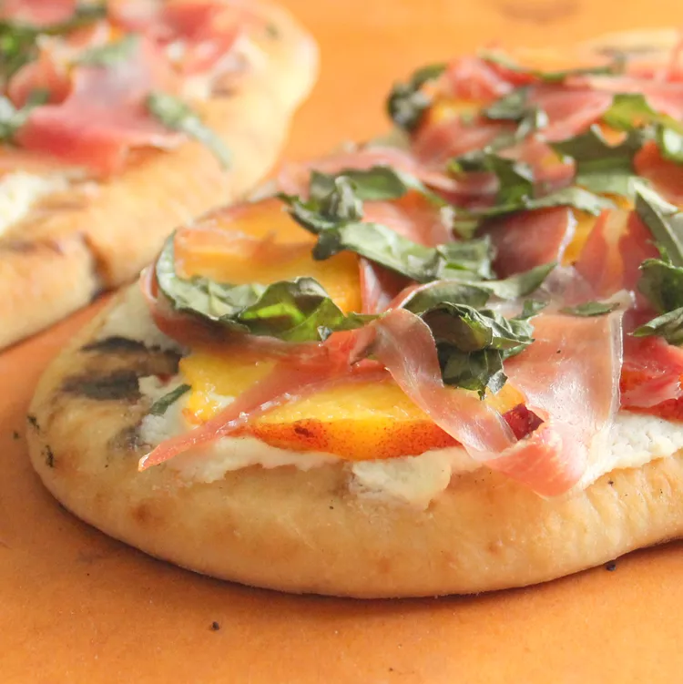

Grilled Prosciutto and Peach Flatbread Pizza
Description
Soft naan topped with a light spread of ricotta, topped with sweet peaches,
salty prosciutto, a little basil, and a drizzle of honey balsamic reduction - all
grilled to perfection!

- 1 cup balsamic vinegar
- ¼ cup honey
- ½ teaspoon lemon juice
- ¼ teaspoon black pepper
- 2 naan bread
- 4 ounces ricotta cheese
- 2 fresh peaches, sliced
- 1 (3 ounce) package prosciutto, torn into pieces
- 3 tablespoons thinly sliced fresh basil
Steps:
- Combine balsamic vinegar, honey, lemon juice, and pepper in a small
saucepan. Bring to a boil over high heat; reduce to low. Simmer until mixture
has reduced down to 1/3 cup, about 15 minutes.
- Preheat an outdoor grill for medium-high heat and lightly oil the grate.
- Return flatbreads to to the grill. Grill with the cover on, until the cheese is
melted and the bottom of the flatbread begins to char, about 7 minutes.